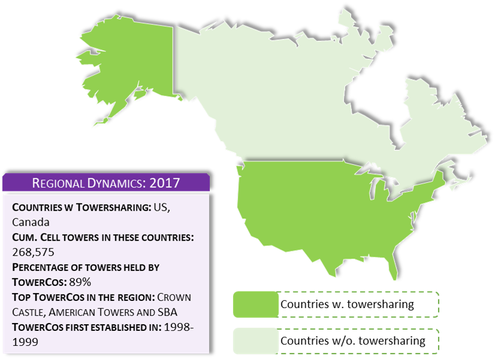
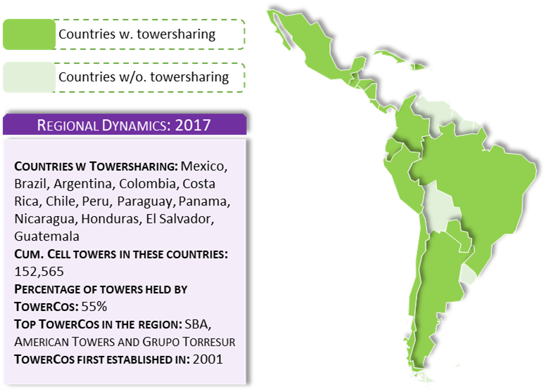
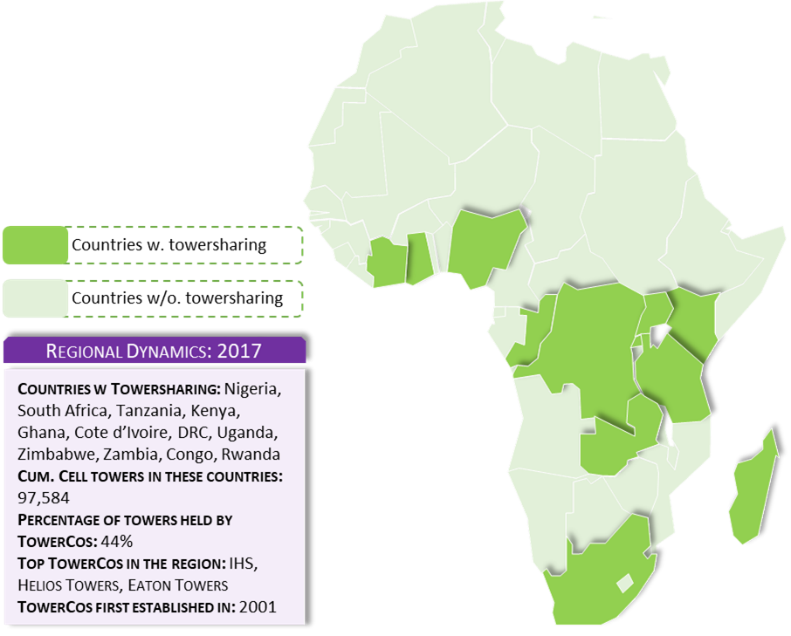
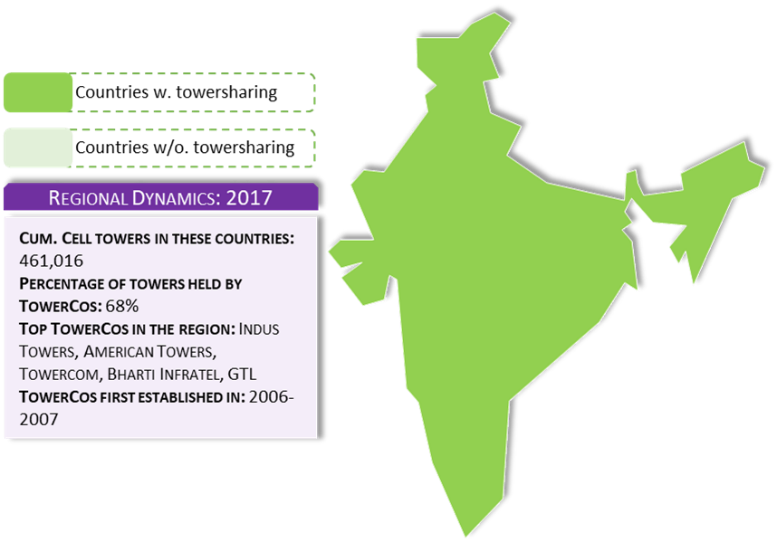
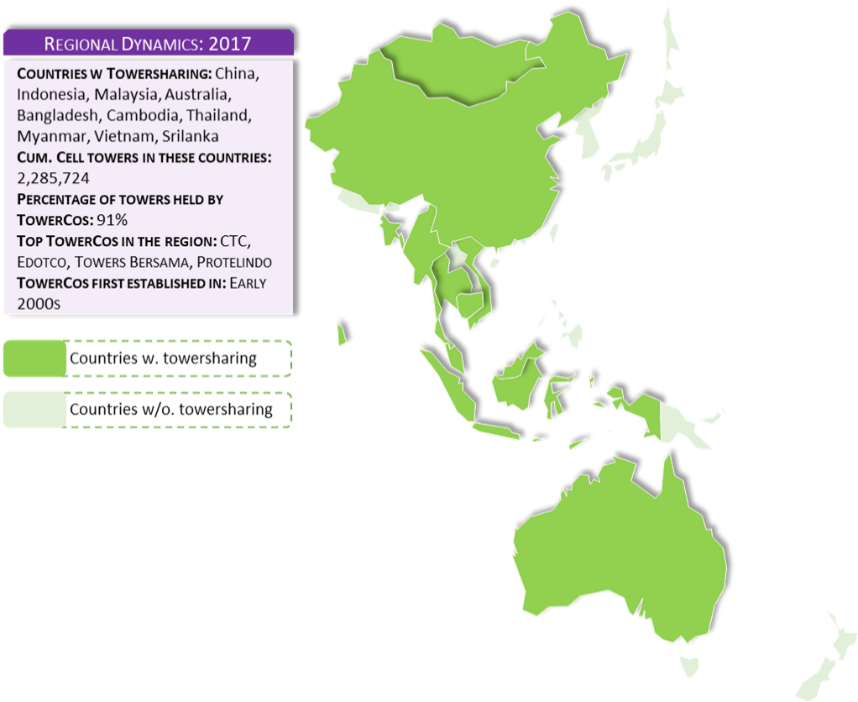
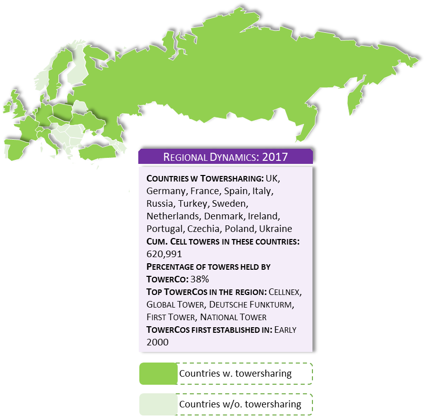
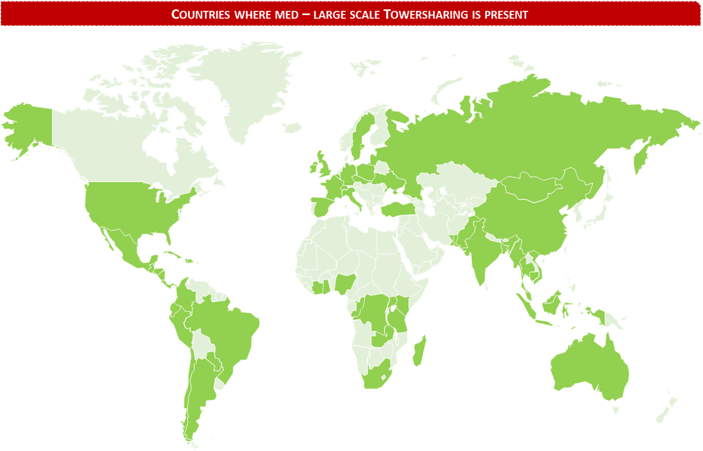
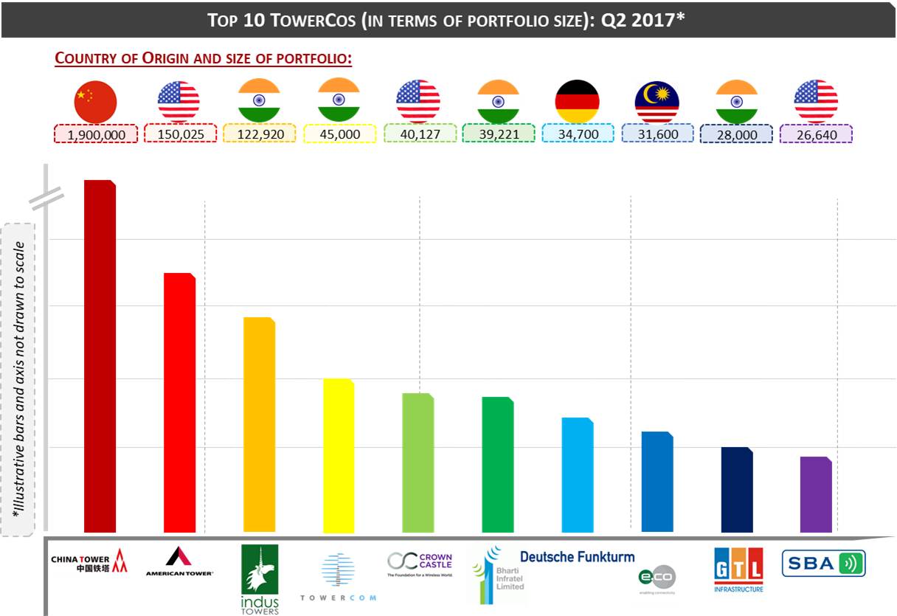

History of TowerCos: Expansion Across Borders 🌍
Disclaimer:
This article is for educational purposes only. Information presented has been compiled from multiple pieces of literature including Towerxchange.com and involves some data crunching conducted by the author. Since most TowerCos are under private ownership globally, data is available to the extent it is provided by Governments and/or TowerCos. Certain approximations have been made.
Please also review the General Disclaimer covering all content in and/or directed from Quantificate.ca.
United States: Where It All Began 🇺🇸
TowerCos first emerged in the US when executives from three American Telecom and Media Corporations (Steve Bernstein Associates, Castle Towers and American Radio) realized the value of harnessing the potential of Tower Assets by selling space to multiple tenants. All three corporations almost simultaneously initiated the process of establishing fully functional TowerCos by either building new towers, purchasing portfolios from corporations or carving out Tower Assets from their respective companies.
Steve Bernstein Associates successfully transitioned from a tower builder to a tower owner, to establish what is now SBA Communications. American Radio carved out its Tower Assets and eventually IPO'd its carveout in 1998 forming what is now American Towers, whereas executives from Castle Pines created a purpose built TowerCo, with backing from a Venture Capital and a Private Equity firm, called Castle Towers. Castle Towers then ventured on to purchasing Tower Assets in the USA and UK markets. One of their most notable acquisitions, at that time, was a platform purchase of a few hundred towers from Crown Communications that resulted in the company being renamed to Crown Castle (as it is today).
🏗️ "Steel and Grass": These initial transactions were based on a model where TowerCos would only provide the tower structure ("steel") and ground space ("grass") for ComCos to install their equipment. This is widely known as the traditional and most basic model of Towersharing today.

Central & Latin America (CALA) 🌎
Eventually when Towersharing had managed to gain traction in the USA, the same TowerCos ventured into introducing the concept into the Central America and Latin America region (known as the "CALA" region). Initially, the "steel and grass" structure (which by then had amassed massive support and appreciation) was replicated across the CALA region, with the same (or similar) contractual terms between the TowerCos and ComCos which were being implemented in the US. This traditional structure had to be modified into a hybrid structure bearing in mind the regional economics and pressure points of the ComCos operating there.
Between 2010 and 2014, major Tower deals came into play in CALA culminating into a major operational base and presence being enjoyed by TowerCos in the region. As of today, majority of the Tower Assets are under the ownership of TowerCos, of which Brazil and Mexico have the highest penetration.

Sub-Saharan Africa: The Land of Limitless Potential 🌍
Africa was and is still to date the land of limitless and boundless potential especially owing to the enormity of the continent. One of the major reasons of transitioning into Africa was the huge opportunity to establish infrastructure that enabled connectivity in the region. This need for expanding connectivity is what led to the establishment of household names in the Tower Industry such as IHS, Helios Towers and Eaton Towers.
However, to fully realize and facilitate the concerns of ComCos in the region (which were mostly MNOs), the traditional "steel and grass" model had to be tweaked. Africa faced the problem of recurring power outages and site access issues. Majority of the tower related OPEX being incurred by the MNOs operating there constituted fuel expenditure for functioning the generator sets or "gensets" (both Diesel Consumption and transport). This was a cause of major concern for said MNOs.
TowerCos managed to address these concerns and relieve the MNOs of the risk by introducing a modified Tower Sharing Service Agreement (called the Master Service Agreement or "MSA") that catered to bearing responsibility for optimizing power solutions (by optimizing genset consumption and introduction of back-up batteries) and managing logistics for the power solutions (by optimizing fuel transportation and reducing fuel leakage due to theft).

India: An MNO-Owned TowerCo Revolution 🇮🇳
Right about the time when SSA was experiencing exponential growth in Towersharing, a parallel effort was also underway in India. The introduction of Towersharing in India would eventually be a further evolution of the concept expanding the horizon of how TowerCos can function across the global landscape. Whereas, the "steel and grass" (or in other words, "Pureplay") structure was being customized in SSA, a new kind of structure (albeit ownership structure) was being devised in India.
Between 2006–2010, an independent small TowerCo Quippo acquired a small portfolio of c. 1,000 towers from then MNOs Hutch and Spice Telecom. At the same time, MNOs Bharti Airtel, Vodafone and IDEA Cellular created the first TowerCo globally, owned and managed by MNOs. This TowerCo would eventually be named Indus Towers and would be the largest TowerCo in the world with c. 70,000 towers.
💡 A Landmark Development: The creation of Indus Towers was solely for the purpose of reducing MNO OPEX by hosting multiple tenants on a single tower — reducing the per-tenant lease fee drastically. This move eventually reduced potential profitability forecasts of TowerCos in the region and resulted in an upsurge of ComCos operating in India.
Between 2010–2012, however, there was a major reshuffling by the Indian Communications Authority that led to cancellation of c. 122 ComCo licenses. This resulted in an oversupply of Tower Assets in the market in contrast to the amount of demand.

Southeast Asia & China 🌏
In the far east, TowerCos were also coming into effect in Indonesia and Malaysia. With household names such as Tower Bersama (Indonesia), Edotco (Malaysia, a TowerCo arm of the ComCo Axiata) and Protelindo (Indonesia), the concentration of Tower Asset ownership swiftly changed hands from MNOs to these TowerCos. Today, majority of the Tower Assets in this geography are currently under TowerCo ownership.
China also initiated the establishment of TowerCos during the first half of this decade. In 2014, three state-owned ComCos — China Mobile, China Unicom and China Telecom — created the first TowerCo in the country called China Tower Corporation ("CTC"). CTC is a TowerCo owned by the state and to this date has more than 1.7 million Tower Assets under its ownership, marking it by far the largest TowerCo in the world.

Europe: Progressive Infrastructure Sharing 🇪🇺
Europe has always been progressive in adopting efficient, lean and environmentally friendly policies, more so than the other regions combined. It is no wonder then that the European continent (and the entities operating within) had devised a method to optimize the Passive Wireless Communications Grid across its landscape.
Towersharing is present in Europe, however, TowerCos are few and scattered across the region. A few prominent TowerCos operating in the European Continent include Cellnex (Southern Europe, Spain and Italy as their primary markets), Deutsche Funkturm (Germany) and First Tower Company (Russia). What makes the European TowerCo landscape unique from the rest of the world is primarily the inclusion of state and MNOs in the industry.
European countries were among the first to adopt MNO infrastructure sharing around the globe. Many states encouraged (and went so far as mandating) Towersharing across their respective geographies, leading MNOs to carve out their Tower Assets into wholly (or majority) owned subsidiaries and market these towers to other MNOs. Progression in sharing today has reached a point where ComCos have embarked on Network and Spectrum sharing (sharing Active Equipment), reducing the need for duplication of Active Equipment installed on the towers.
The aforementioned progressive view of the European Communications Landscape to optimize their Network Grid meant that there was limited profitability for Independent TowerCos to benefit from. However, from 2013 onwards, there has been a spike in TowerCo related activity in the region boasting high valuations that may expose Europe to higher TowerCo activity.

Summing It Up: Global Towersharing Presence 🗺️
As of today, the existence of Towersharing (and subsequently TowerCos) spans globally, touching almost all the major regions. The only major region largely untapped by TowerCos is the Middle East and North Africa (MENA). However, TowerCo activity is expected to pick up in the near future.

While we are on the subject of TowerCos, it is prudent to mention the largest TowerCos that operate across the globe. Some of these TowerCos concentrate mostly in their country of origin, whereas the rest have diversified platforms that span across different regions.

🏆 By the Numbers: China Tower Corporation leads the world with 1.9 million tower assets — more than 12x the size of the next largest TowerCo (American Towers at 150,025).
What's Next? 🚀
In the next section we are going to dive into the TowerCo Operating Model. We will be visiting the assets that are core to functioning of a Tower Asset, and the mechanism that enhances (and attracts) the value of the TowerCo model. We will also be reviewing (in moderate detail) the different TowerCo models and the responsibilities that a TowerCo undertakes in each category. ⚙️
Continue the Series 📚
This is Part 3 of the Towersharing Deep Dive series. Up next: the TowerCo Operational Model.
← Part 2: Why Towersharing? Explore More ArticlesReferences & Sources 📖
- The history of the tower industry, and a comparison of the towerco business model — Kieron Osmotherly, Towerxchange
- Rise of the Tower Business — AT Kearney
- Towerxchange's introduction to the global tower industry — Kieron Osmotherly, Towerxchange
- Analysis of the independent tower market in Africa and the Middle East — Laura Graves, Towerxchange
- Analysis of the independent tower market in Europe — Frances Rose, Towerxchange
- Analysis of the independent tower market in CALA — Arianna Neri, Towerxchange
- Analysis of the independent tower market in Asia — Christie Liu, Towerxchange
- An introduction to the unique tower industry in Europe — Towerxchange
- Top TowerCos — Kieron Osmotherly, Towerxchange